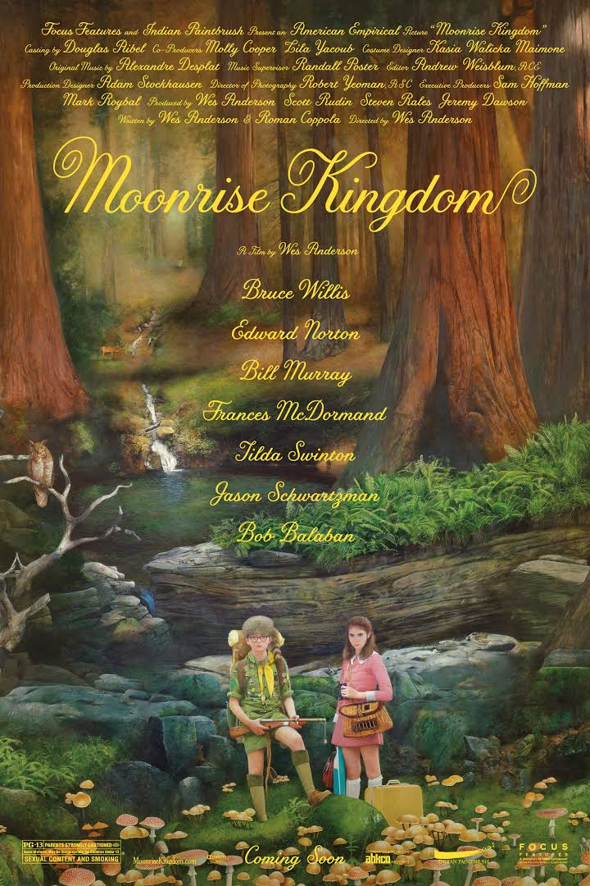

About the Film
The film takes place on the island New Penzance in New England. Khaki Scout Sam Shakusky leaves Camp Ivanhoe in the middle of the night to runaway with his penpal love interest, Suzy Bishop. Suzy's parents and the rest of the Khaki Scouts set out to track down the runaways over the course of the film.
Fun Facts
- The film was nominated for "Best Original Screenplay" at the Writers Guild of America, Academy Awards, BAFTA Awards, and Spirit Awards
- The books Suzy packs are not real, but Anderson wrote snippets of each book and had artists design their covers
- A lighthouse in Jamestown, Rhode Island was used for the exterior of the Bishop home
